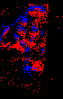
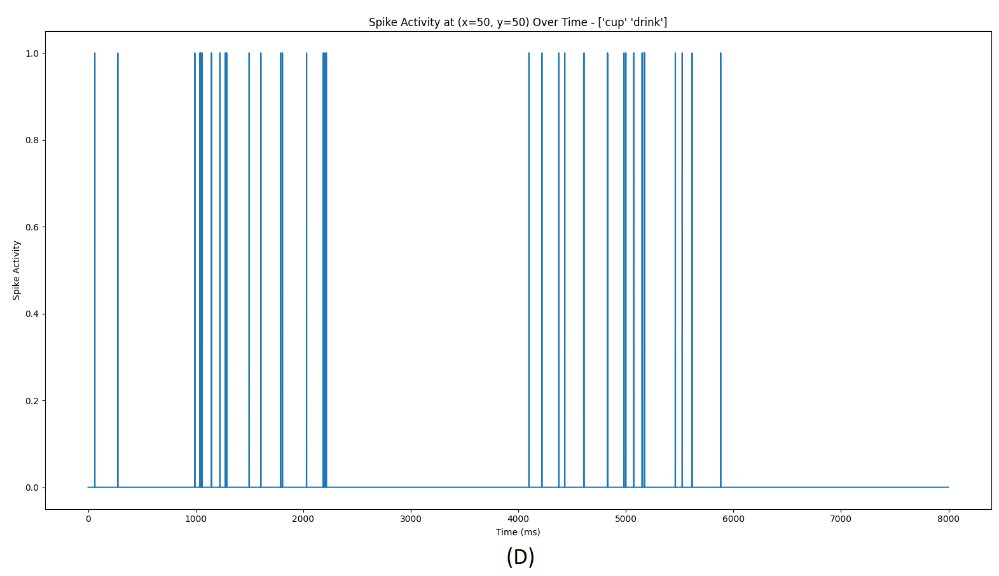
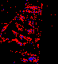
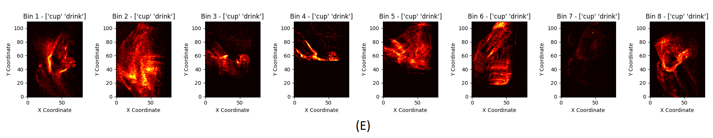
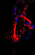
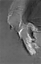
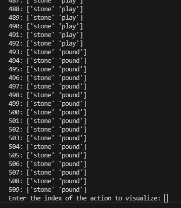
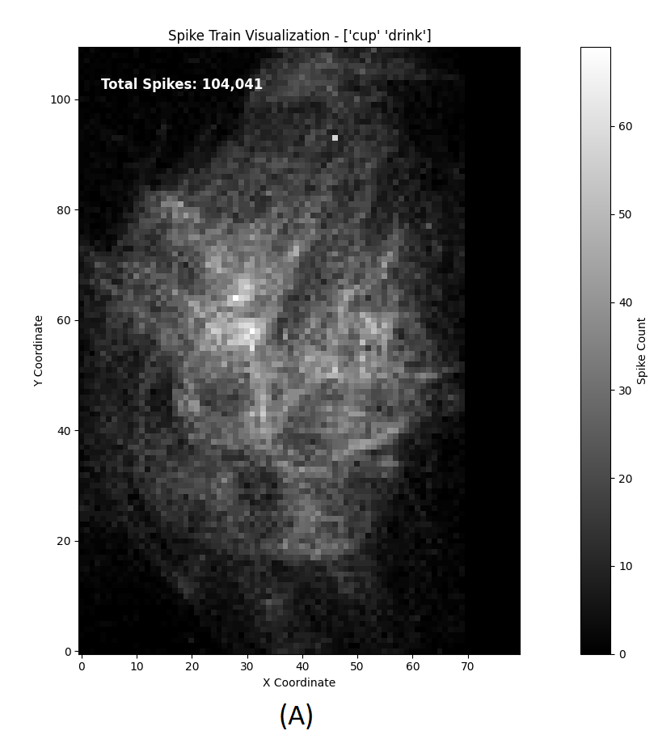

As part of an external lab collaboration (Dataninja project) with Prof. Francisco Barranco and Prof. Eduardo Ros at the Computer Vision and Robotics (CVR) Lab, I worked on an event-based activity recognition dataset developed by the host lab [1, 2]. Our research focuses on Spiking Neural Network (SNN) exploration, where data must be represented as spike trains for effective network processing. To address this issue, I designed and implemented an algorithm that converts the original event-based dataset into spike train format, tailored for SNN applications. In addition to data conversion, I worked on a framework for visualizing and comparing both the original event-based dataset and the generated spike train dataset. This framework allows for the event and spike reconstruction into frame-based visualizations, producing event-based videos from real and spike-based videos from generated datasets. This visualization is essential for validating the fidelity of the spike train dataset by comparing it to the original data. The spike train dataset, along with the visualization framework, is publicly available on our GitHub channel, contributing valuable resources to the SNN research community and advancing the field of event-based vision exploration.
Event-based vision and SNNs are emerging as transformative technologies for neuromorphic computing, which offers efficient and biologically inspired methods for processing dynamic and real-time data. However, the use of these event-based datasets in SNNs requires specific data formats, namely spike trains, that mirror the spike-based communication found in biological neural networks.
Event-based cameras capture dynamic changes in a scene by recording pixel-level events triggered by motion, rather than traditional frame-based methods [3]:
1- Timestamp: High-precision time information for each event.
2- Pixel Coordinates (x, y): Specifies the exact location of the pixel where the event occurred.
3- Polarity (ON/OFF): Indicates whether the pixel brightness increased or decreased.
4- Event Intensity: Represents the magnitude of brightness change for some event cameras.
Converting event-based datasets to spike trains is essential for SNNs.
Spike trains align with SNNs time-based processing, while event-based data, being asynchronous, is difficult for spiking models to handle efficiently.
Why conversion is important:
1- Better compatibility: Spike trains match the temporal dynamics of spiking neurons.
2- Improved processing: Event-based data streams are challenging for spiking models.
3- Efficient learning: Spike trains enable time-dependent training and inference.
4- Optimized performance: SNNs work more effectively with spatiotemporal data patterns.
Transforming event-based datasets to spike trains is essential for SNNs modeling. Spike trains align with SNNs time-based processing, while event-based data, being asynchronous, is difficult for spiking models to handle efficiently. Differences between event-based datasets and spike train datasets:
Data Format:
Event-based datasets capture asynchronous changes in pixel brightness,
while spike train datasets represent these changes as discrete spikes over time.
Temporal Resolution:
Event-based datasets provide high temporal resolution with continuous streams of events,
whereas spike trains aggregate these events into discrete spikes that align with neural activity.
Data Synchronization:
Event-based data lacks inherent time alignment, which makes it difficult for time-dependent models.
Spike trains are inherently time-synchronized, facilitating more effective learning and inference in SNNs.




* On the left side: Event-Based Dataset - Class: Cup - Action: Drink.
* Center: Spiking Activity in Specific Region (x=50, y=50) - Class: Cup - Action: Drink.
* On the right side: Generative Spike Train Dataset - Class: Cup - Action: Drink.
* On the bottom - Figure E: presents binned heatmaps, where spike events are aggregated into spatial bins.
The raw event data from these event-based sensors are inherently sparse and asynchronous, which makes it difficult to directly interpret or utilize for standard image-based applications. Therefore, the primary goal of reconstructing events into frame-based visualizations is to transform the sparse, asynchronous event data into a structured format that can be easily analyzed and visualized. Secondly, the motivation behind visualizing the generated spike train dataset and comparing the visual differences between real (event-based) and generated (spike train) datasets. For this reconstruction of events into a frame-based visualization framework, we used a trained neural network model, which is used for the reconstruction [4].




* On the left side: Frame visualization of raw event data, showing the transformation of asynchronous events into structured images.
* Center-Top: Individual class actions in the generated spike train dataset, allowing users to select specific events for frame reconstruction.
* Center-Bottom: Visualization of the total number of spikes in the selected class action file.
* On the right side: Frame visualization of spike train data, illustrating the transformation of asynchronous events into structured images.
An upcoming runtime tool based on this work, designed to enhance your experience with event-based datasets:
* Transformation Tool: A tool will be available soon to convert event-based datasets into spike train datasets, optimizing them for SNNs.
* Visualization and Frame Reconstruction: Visualization options and frame reconstruction capabilities for spike train and event datasets
* User-Friendly GUI: the upcoming tools will feature an intuitive GUI to simplify the transformation and visualization processes.
Event-Based Dataset (Original): Download Link
Description: This dataset contains raw data captured by event-based cameras, providing high temporal resolution and asynchronous event streams. Suitable for initial experiments and raw data analysis.
Spike Train Dataset (Transformed): Download LinkDescription: This dataset features the same information transformed into spike train format, optimized for use with SNNs. This format aligns with the time-based processing needs of SNNs and facilitates efficient learning and analysis.
[1]. D. Deniz, C. Fermuller, E. Ros, M. Rodriguez-Alvarez, & F. Barranco. (2023) "Event-based Vision for Early Prediction of Manipulation Actions". arXiv preprint arXiv:2307.14332.
[2]. D. Deniz, E. Ros, C. Fermuller, & F. Barranco. (2023). "When Do Neuromorphic Sensors Outperform Cameras? Learning from Dynamic Features". In 2023 57th Annual Conference on Information Sciences and Systems (CISS) (pp. 1-6). IEEE.
[3].Wan, J., Xia, M., Huang, Z., Tian, L., Zheng, X., Chang, V., ... & Wang, H. (2021). Event-based pedestrian detection using dynamic vision sensors. Electronics, 10(8), 888.
[4]. Rebecq, Henri, et al. (2019). "High speed and high dynamic range video with an event camera." IEEE Transactions on Pattern Analysis and Machine Intelligence 43.6: 1964-1980.